COMID
WEEK 09 · 차시 9-1 ~ 9-3 · 50분
기계학습 (1) 표현자와 대리모델
분자 표현자와 feature library · XGBoost 대리모델 · SHAP 해석
윤태영 (Taeyoung Yun)
실습 · XGBoost + SHAP
퀴즈 9주차
RECAP · WEEK 08
지난 주차 요약과 이번 주차의 위치
8주차
클링커 모델 · ReaxFF 수화 · C-S-H(calcium silicate hydrate) 물성 · ML 퍼텐셜 — 두 소재의 MD 물성 계산 완료
남은 질문
MD 1회 계산 비용 큼 — 후보 조성 전체를 계산하지 않고 물성 예측 가능 여부
이번 주차
분자 표현자(molecular descriptor)로 조성 수치화 → XGBoost 대리모델(surrogate model)로 예측 → SHAP으로 해석
파이프라인 6단계 중 04 대리모델 학습의 첫 단계 — 트리 모델 기준선(baseline)
OBJECTIVE
9주차 학습목표
01
분자 표현자(RDKit · SMILES · 분자 지문 fingerprint) 계산과 특징 라이브러리(feature library) 구축
02
적절한 데이터 분할로 XGBoost(eXtreme Gradient Boosting) 대리모델 학습 · 검증
03
하이퍼파라미터(hyperparameter) 체계적 조정 · 과적합(overfitting) 신호 판별
04
SHAP(SHapley Additive exPlanations)으로 모델 예측 해석 · 특징 재정련
AGENDA
9주차 구성
9-1
표현자와 feature library
18분
9-2
XGBoost 대리모델
16분
9-3
SHAP 해석
16분
9-1
표현자와 feature library
18분 · RDKit · SMILES · fingerprint 표현자 계산 · 측정 가능 기술자 · 라이브러리 관리
9-1 · DESCRIPTORS
분자에서 혼합물 표현자로
9-1 · SMILES → RDKit
SMILES 한 줄에서 숫자 벡터까지
descriptors.py
from rdkit import Chem
from rdkit.Chem import Descriptors, AllChem
mol = Chem.MolFromSmiles("c1ccc2ccccc2c1")
d = dict(mw = Descriptors.MolWt(mol),
log_p = Descriptors.MolLogP(mol),
tpsa = Descriptors.TPSA(mol),
n_aro_ring = Descriptors.NumAromaticRings(mol))
fp = AllChem.GetMorganFingerprintAsBitVect(
mol, radius=2, nBits=1024) # ECFP4
row = {**d, **{f"fp{i}": b for i, b in enumerate(fp)}}
SMILESSMILES(Simplified Molecular-Input Line-Entry System): 분자 구조의 문자열 한 줄 표기 — 3주차 SARA 대표 분자 · 7주차 첨가제 라이브러리 모두 이 형식
기술자RDKit(오픈소스 화학정보학 라이브러리) 계산 · MW · logP · TPSA · 방향족 고리 수 — 해석 가능한 수십 개 수치
fingerprintECFP4 — 반경 2 이내 부분구조의 존재 여부를 1024 비트로 표시 · 해석 어려움 · 구조 차이에 민감
출력분자 하나 = 표 한 줄 · 열 이름 고정 필요 (이후 병합 조건)
비트 수 증가 → 표현력 상승 · 작은 데이터에서는 과적합 — 1024에서 시작
9-1 · MEASURABLE DESCRIPTORS
실험으로 측정 가능한 분자 기술자 8종
집계 방식
분자별 값 → 분자 개수 가중(count-weighted) 평균 → 혼합물 수준 특징
선정 기준
MD 계산값(e_intra) · 내부 라벨(aging) 제외 → 실험실 측정 가능한 입력만 사용
출처: COMID comid_experimental_descriptors.md (Claude Science, 2026-07-03)
9-1 · SIZE & SHAPE
분자 크기 · 첨가제 형상의 수치화
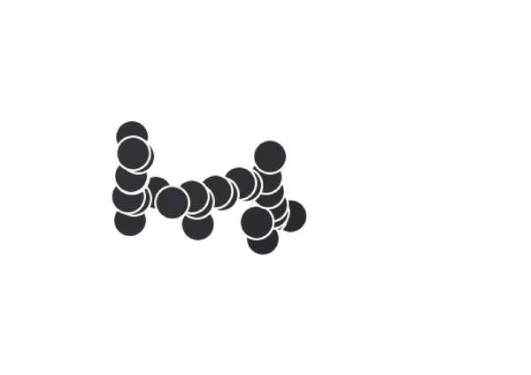
Squalane · 포화분(saturate)
무거운 원자 30
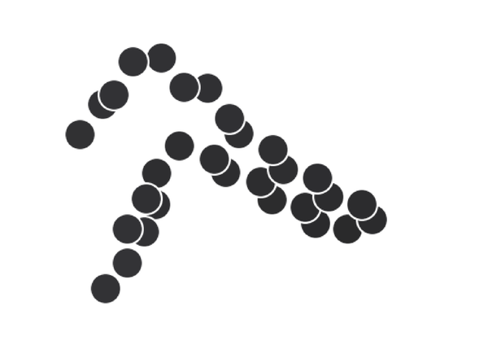
DOCHN · 방향족분(aromatic)
무거운 원자 30
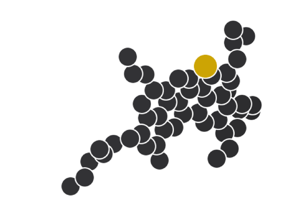
Thio · 아스팔텐(asphaltene)
무거운 원자 52
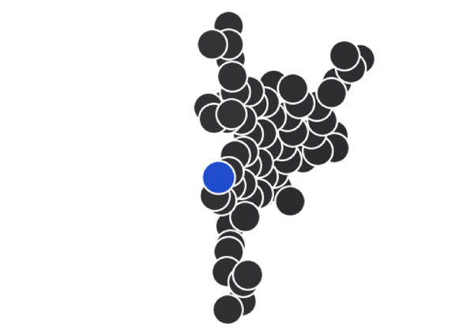
Pyrrole · 아스팔텐
무거운 원자 66
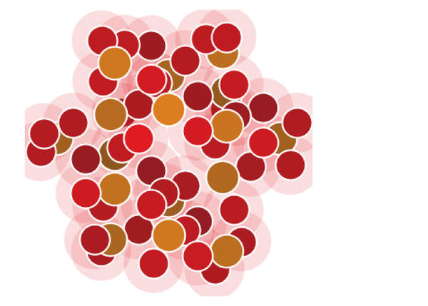
SiO₂ 나노입자
종횡비 1 · ρ 2.65
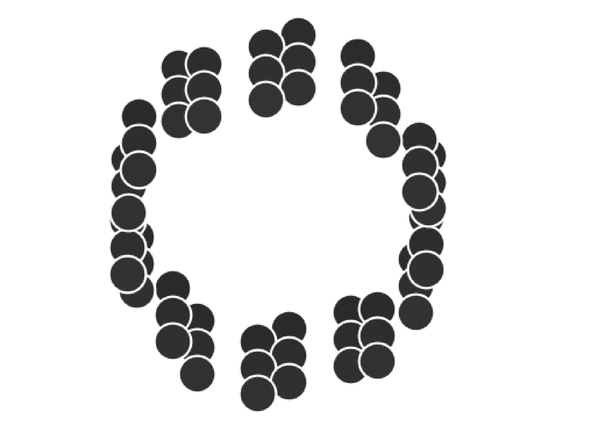
탄소나노튜브(CNT)
종횡비 100 · ρ 2.1
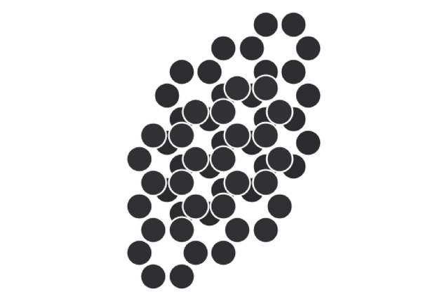
그래핀(graphene)
종횡비 50 · ρ 2.27
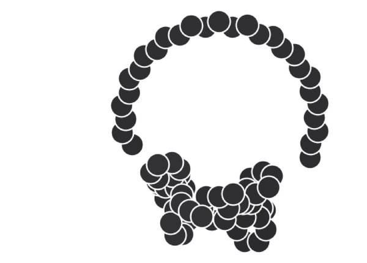
SBS(스티렌-부타디엔-스티렌)
종횡비 10 · ρ 0.94
원자 색: 검정 C · 빨강 O · 파랑 N · 노랑 S · 주황 Si · ρ 단위 g/cm³ · 첨가제 값 = 문헌 대표값 · 그림: COMID fig_size_additive_features
9-1 · OXIDATION INDEX
노화(aging) 정도 = 분자당 산소 원자 수
아스팔텐 AS-Pyrrole
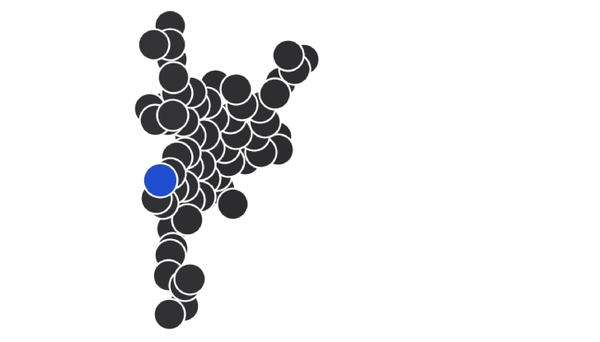
비노화 NA · O 0
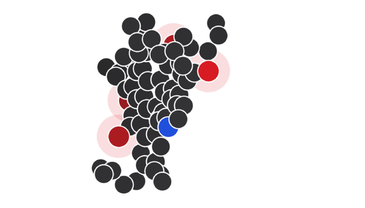
단기 SA · O 4
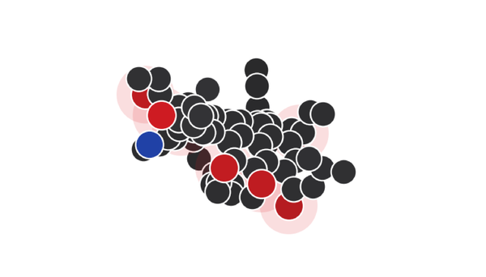
장기 LA · O 7
아스팔텐 AS-Thio
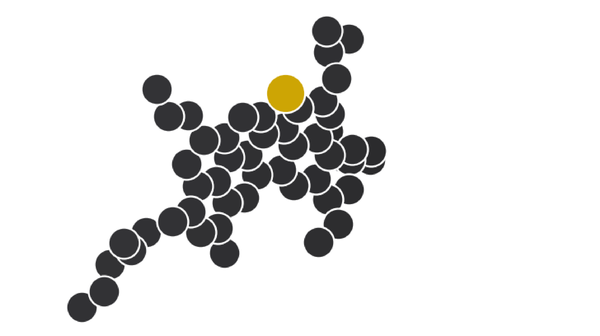
비노화 NA · O 0
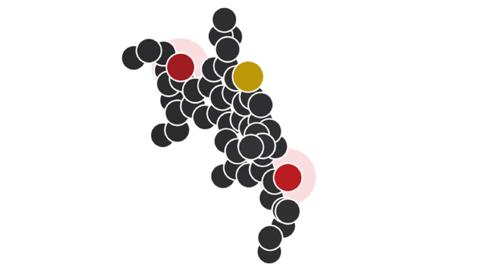
단기 SA · O 2
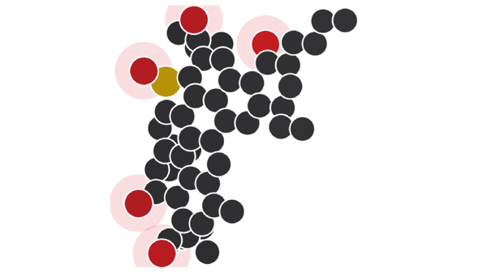
장기 LA · O 5
산화지수(oxidation index)
mol 파일의 O 원자 수 · 노화 시 카보닐(carbonyl) · 하이드록실(hydroxyl) 기 추가
바인더 O 분율(O-frac)
O 원자 수 / 전체 원자 수 — 원소분석으로 측정 가능
효과 · MD 계산값
산화지수 1 증가 → 밀도 +0.025 g/cm³ (회귀 기울기, 그림 주석값)
장점
라벨(NA · SA · LA) 대신 연속 수치 → 중간 노화 단계도 입력 가능
원자 색: 검정 C · 빨강 O · 파랑 N · 노랑 S · 그림: COMID fig_molecular_structure
9-1 · REDUNDANCY
기술자 8개 → 3개: 중복 제거 후 성능 유지
중복 쌍 1
HC_ratio ≈ aromaticity_proxy · 상관계수 r = 0.96
중복 쌍 2
O_frac ≈ hetero_frac · 상관계수 r = 0.98
물성별 지배 기술자
밀도 = 헤테로 · O 분율 · E_inter = 분자 크기 · CED = O 분율
최소 3기술자
분자 크기(n_heavy) + 산소 분율(O_frac) + 종횡비(aspect_ratio) · 모두 실험 측정 가능
Group CV R² · 미지 조성 · 온도 + 첨가제 포함
밀도
최소 3기술자
0.875
전체 8기술자
0.876
CED
최소 3기술자
0.858
전체 8기술자
0.839
체적탄성률
최소 3기술자
0.804
전체 8기술자
0.795
E_inter
최소 3기술자
0.795
전체 8기술자
0.791
출처: COMID comid_experimental_descriptors.md · 막대 축 0 ~ 1
9-1 · FEATURE LIBRARY
feature library — 표현자 저장 · 재사용 · 버전 관리
한 번 계산, 여러 번 사용
분자 단위 표현자는 조성 변경과 무관 — 조성별 재계산 생략
버전 기록
RDKit 버전 · 비트 수 · 열 목록 기록 — 변경 시 모델 성능도 변화
MD 라벨과 조인 키
6주차 후처리 CSV의 실험 ID · 조성 ID로 결합 — 키 없으면 학습 행렬 구성 불가
누수(leakage) 방지
MD 계산 후에만 얻는 구조 기술자는 예측 입력에서 제외 — 설계 단계에 없는 값
9-1 · FEATURE CORRECTION
특징 재검토 사례: SARA 무효 · additive_wt 종속
01 · SARA 조성 4개
1차 특징 15개: 온도 · 첨가제 wt% · SARA 4 · 바인더 원핫(one-hot) 3 · 첨가제 원핫 6
SARA 중요도 ≈ 0 · CSV 확인: 672행 중 634행이 15 · 35 · 30 · 20 wt%로 동일
→ 변별력 없음 · 바인더 원핫이 대체
02 · additive_wt
첨가제 종류(원핫)로 additive_wt 예측 시 R² = 0.9996 → 독립 정보 없음
첨가제별 고정 wt%: CNT 4.17 · 그래핀 4.22 · SBS 5.57~5.90 · SiO₂ 6.18 · 리그닌(lignin) 8.41
→ 제거 후 성능 동일: 밀도 0.973 → 0.974
03 · 원핫 → 분자특성
첨가제 원핫 대신 밀도 · 무기/유기 · 폴리머 여부 · 종횡비 · 강성 등급 · 나노 여부
원핫: 새 첨가제 = 새 열 → 예측 불가 · 분자특성: 값만 알면 예측 가능(외삽)
→ 역설계 목표를 물성값으로 지정 가능 (예: 밀도 2.5 · 고종횡비 필러)
점검 순서변수의 실제 분포 확인 → 다른 특징으로 예측되는지 확인(종속성) → 물리 의미가 있는 값으로 대체
출처: COMID comid_modeling_report.md · comid_feature_correction.md · comid_core672_dataset.csv 직접 집계 · 첨가제 분자특성 = 문헌 대표값
9-2
XGBoost 대리모델
16분 · 트리 분할 · 부스팅 · 그룹 분할 검증 · 모델 비교
9-2 · WHY
GNN(그래프 신경망)보다 트리 모델을 먼저 쓰는 이유
데이터가 작다
MD 라벨은 수백~수천 건 · 표 형태 데이터에서 그래디언트 부스팅(gradient boosting) 우수
기준선이 필요
10주차 GNN이 이 기준선을 넘지 못하면 사용 근거 없음
해석
SHAP으로 물성 변화에 기여한 조성 변수 설명 가능
역설계에서는 "왜 그 조성인가"에 대한 설명 요구 빈번 — 해석 가능성 = 부가 기능이 아닌 요구사항
9-2 · DATASET
core672: MD 계산 672행 · 물리 범위 정제 대상
CED 비물리값
음수(최소 −3123) 48행 → 제거 · 정제 후 CED group CV R² −75 → 0.71 (보고서)
체적탄성률 이상값
10 GPa 초과 50행 (최대 6.5×10²⁷) → 제거
중복 행
같은 조성 · 온도 · 밀도 반복 47행 (첫 행 제외 추가 사본 수 · 중복 묶음 전체 58행 · 최대 6회) → 무작위 분할 시 누수 원인
그룹 정의
바인더 × 첨가제 × 노화 = 42개 조성 그룹 → 그룹 분할 단위
타깃 약어: CED(cohesive energy density, 응집에너지밀도) · E_inter(분자간 상호작용에너지) · Tg(유리전이온도) · 원천: COMID comid_core672_dataset.csv
9-2 · LIVE · SPLIT
결정 트리(decision tree) 분할: 임계값 이동 → 좌우 평균 · 오차 변화
분할 변수임계값데이터: core672 · AAA1 무첨가 36행 · 목표 = 밀도
NASALA
분할 조건
—
왼쪽 (진한 점)
—
오른쪽 (흐린 점)
—
—
—
—
SSE 단위: (g/cm³)² × 10⁻³ · 트리 학습 = 모든 후보 중 SSE 합 최소 분할 선택 → 잎마다 반복
9-2 · LIVE · BOOSTING
부스팅(boosting): 트리 추가마다 잔차(residual) 감소
η = 0.3M =0깊이 1 트리 · 특징: 온도 · 노화
점 = MD 밀도 · 선 = 예측NASALA
학습 RMSE (g/cm³)
—
—
9-2 · SPLIT & FIT
누수 없는 학습 절차
Python
from sklearn.model_selection import GroupKFold
import xgboost as xgb
gkf = GroupKFold(n_splits=5)
for tr, va in gkf.split(X, y, groups=comp_id):
mu, sd = X[tr].mean(axis=0), X[tr].std(axis=0)
X_tr, X_va = (X[tr]-mu)/sd, (X[va]-mu)/sd
model = xgb.XGBRegressor(
n_estimators=800, learning_rate=0.03,
max_depth=5, subsample=0.8,
colsample_bytree=0.8, reg_lambda=1.0)
model.fit(X_tr, y[tr])
pred = model.predict(X_va)
그룹 분할(GroupKFold)
comp_id로 묶어 같은 조성이 학습 · 검증 양쪽에 걸치지 않게 배치
정규화(standardization) 시점
학습 폴드에서 μ · σ 를 구해 검증 폴드에 적용
라벨 변환
점도는 log10 변환 후 학습 · 보고 시 역변환
표본 가중
MD 오차가 큰 라벨에 작은 가중치 부여
9-2 · LIVE · LEAKAGE
무작위 분할 vs 그룹 분할: 누수(leakage)에 의한 과대평가
—seed 1
무작위 5-foldR² —
RMSE —
—
그룹 5-fold · 42그룹R² —
RMSE —
—
—
데이터
core672 밀도 670행 · 특징 4개: 온도 · 바인더 · 첨가제 · 노화
무작위 분할
같은 조성의 이웃 온도 · 중복 행이 학습 폴드에 존재 → 기억만으로 정답 근접 · 아래 '똑같은 행' 건수 = 온도 · 조성 · 밀도가 같은 행이 학습 폴드에 있는 검증 행 수(seed마다 변동 · 중복 묶음 58행 기준) ≠ #16의 47행(첫 행 제외 추가 사본 수)
그룹 분할
조성 단위로 분리 → 미지 조성 성능의 정직한 추정
수치 = 브라우저 실시간 계산값 (원 보고서 값 아님) · 원천: COMID comid_core672_dataset.csv
9-2 · CIRCULARITY
e_intra 특징 점검: 정보 중복 · 정의상 순환
점검 1 · 파생 가능성 (설계변수 → e_intra 예측 R²)
e_intra 전체
0.760
aromatic 성분
0.783
asphaltene 성분
0.952
→ 정보의 76~95%가 조성 · 산화에 이미 포함
점검 2 · CED 정의상 순환
CED ≡ (Σ Eintra − Etotal) / V
e_intra = CED 정의의 구성요소 → CED 타깃 입력 시 정보 누출 소지 → 제외
T2 = 설계변수 + 산화 (MD 불필요) · T3 = T2 + e_intra · group CV R²
역설계 관점
e_intra = 새 조성의 MD 선행 필요 → 순환 의존 · 기본 구성 = T2 · e_intra는 분자 12종 캐시 재사용 시 밀도 · E_inter에만 선택 적용
출처: COMID comid_feature_redundancy.md (2026-07-03)
9-2 · TUNING
XGBoost 조정 순서
과적합 신호
학습 RMSE는 계속 떨어지는데 폴드 간 검증 RMSE 편차가 증가 — 깊이를 줄이고 규제를 증대
9-2 · MODEL COMPARISON
RF · XGBoost · LightGBM 비교: Group 5-fold CV
R² · 미지 조성 · 막대 축 0 ~ 1
밀도
RF
0.945
XGBoost
0.977
LightGBM
0.976
CED
RF
0.945
XGBoost
0.975
LightGBM
0.973
체적탄성률
RF
0.773
XGBoost
0.760
LightGBM
0.775
E_inter
RF
0.776
XGBoost
0.839
LightGBM
0.858
XGBoost 우세
밀도 +0.032 · CED +0.030 · E_inter +0.063 (RF 대비 R² · 막대값 차 · 밀도 0.977 − 0.945)
체적탄성률
RF 0.773 vs XGBoost 0.760 — 온도가 거의 전부 설명 → 모델 차이 작음
선형 기준선
1차 모델링(SARA 특징): Ridge가 밀도 · 체적탄성률 · E_inter 최고 → 선형 모델 비교 필수
출처: COMID comid_rf_vs_xgb.csv (RF · XGB) · comid_model_comparison.csv (LightGBM) · n = 612 (CED 613) · comid_modeling_report.md · #24 표와 별도 실행 → 체적탄성률 · E_inter 값 차이
9-2 · FEATURE SETS
특징 세트별 성능: 온도만 → 분자특성 → 첨가제 특성
체적탄성률
온도만으로 0.808 · 특징 추가 효과 없음 → 온도 지배 물성
E_inter
온도만 0.382 → 바인더 분자특성 추가 0.782 · 분자 크기 효과
첨가제 분자특성
원핫과 성능 동등 (밀도 0.977 vs 0.974) + 새 첨가제 외삽 가능 → 최종 선택
Group CV R² · 출처: COMID comid_feature_correction.md (모델 · n 미기재) · #23(comid_rf_vs_xgb.csv · XGBoost · n = 612)과 별도 실행 → 밀도 · CED 같음 · 체적탄성률 0.784 vs 0.760 · E_inter 0.842 vs 0.839 · 첨가제 분자특성 = 문헌 대표값
9-3
SHAP 해석
16분 · SHAP 순위 · 누적 분해 · PDP · 특징 재정련
9-3 · SHAP
개념 예시 · 막대 길이는 가상 값
SHAP 개념: 한 예측을 변수별 기여로 분해
SHAP 값(SHapley Additive exPlanations)
한 예측에서 각 변수의 기여량 · 기준값(평균 예측) + 기여 합 = 예측값
읽는 법
상관이지 인과가 아님 — 물리적 타당성 검토 필수
특징 재정련
기여도 0 근처 변수 제거 · 상호작용이 보이면 새 변수 구성
경고
상관 높은 변수끼리 기여도 분할 → 각각 작게 관측
9-3 · SHAP RESULTS
core672 SHAP 순위: 온도 1순위 · 물성별 2순위 상이
밀도mean |SHAP| (g/cm³) · 방향 · 단조성
온도
0.0330 · − · 1.00
바인더 O 분율
0.0244 · + · 0.57
첨가제 밀도
0.0080 · + · 0.20
CEDmean |SHAP| (MPa) · 방향 · 단조성
온도
27.8 · − · 0.82
바인더 O 분율
10.8 · + · 0.35
첨가제 밀도
9.8 · + · 0.20
체적탄성률mean |SHAP| (GPa) · 방향 · 단조성
온도
0.793 · − · 1.00
바인더 O 분율
0.069 · + · 0.26
바인더 형상(종횡비)
0.046 · − · 0.19
E_intermean |SHAP| (kcal/mol) · 방향 · 단조성
온도
139.6 · + · 0.82
바인더 분자 크기
98.3 · − · 0.46
첨가제 밀도
28.5 · − · 0.20
밀도 · CED
2순위 = 바인더 O 분율 (+) → 산화 시 밀도 · 응집 증가
E_inter
2순위 = 바인더 분자 크기 (−) → 큰 분자일수록 더 음의 값 = 강한 상호작용
체적탄성률
온도 0.79 vs 2순위 0.07 → 사실상 온도만의 함수
모델: LightGBM + TreeSHAP · n = 576 · 빨강 = 증가(+) · 파랑 = 감소(−) · 출처: COMID comid_shap_pdp_quant.csv · comid_shap_pdp_analysis.md
9-3 · LIVE · WATERFALL
SHAP 누적(waterfall): 기준값 + 변수별 기여 = 예측값
——
증가 기여감소 기여MD 계산값
—
가법 모델 → 정확한 SHAP
깊이 1 트리의 합 = 특징별 함수의 합 → φⱼ = gⱼ(xⱼ) − 평균 gⱼ
합산 성질
기준값 + Σ φⱼ = 예측값 · 막대 순서 = |φ| 큰 순
—
학습: core672 밀도 670행 · 깊이 1 트리 150개 · 수치 = 브라우저 실시간 계산값 (원 보고서 값 아님)
9-3 · PDP
부분의존도(PDP, partial dependence plot): 변수별 함수 형태
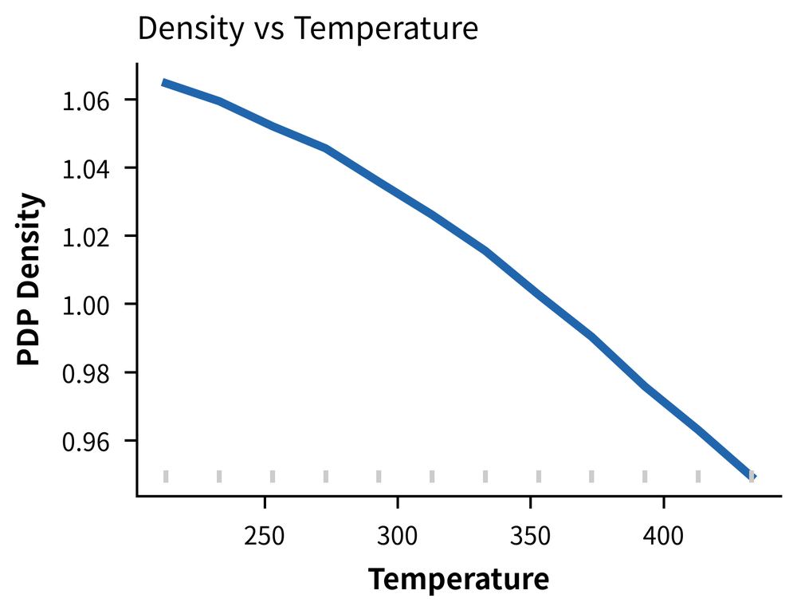
밀도–온도: 단조 감소 · 단조성 1.00 · 변화폭 0.115 g/cm³ → 열팽창과 일치
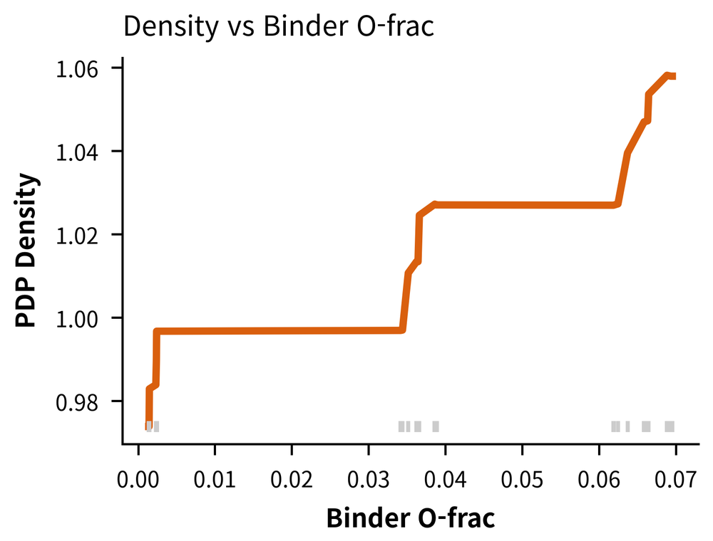
밀도–O 분율: 계단형 증가 · 변화폭 0.084 g/cm³ · 데이터 세 무리(노화 단계)에 집중
읽는 법그림 아래 회색 눈금 = 실제 데이터 위치 · 눈금 없는 구간의 곡선 = 외삽 → 역설계 목표 구간은 데이터 범위 안으로 제한
그림: COMID fig_shap_pdp (LightGBM · n = 576) · 변화폭 · 단조성 = comid_shap_pdp_quant.csv
9-3 · INTERACTION
2D PDP: 온도 × O 분율 상호작용 확인
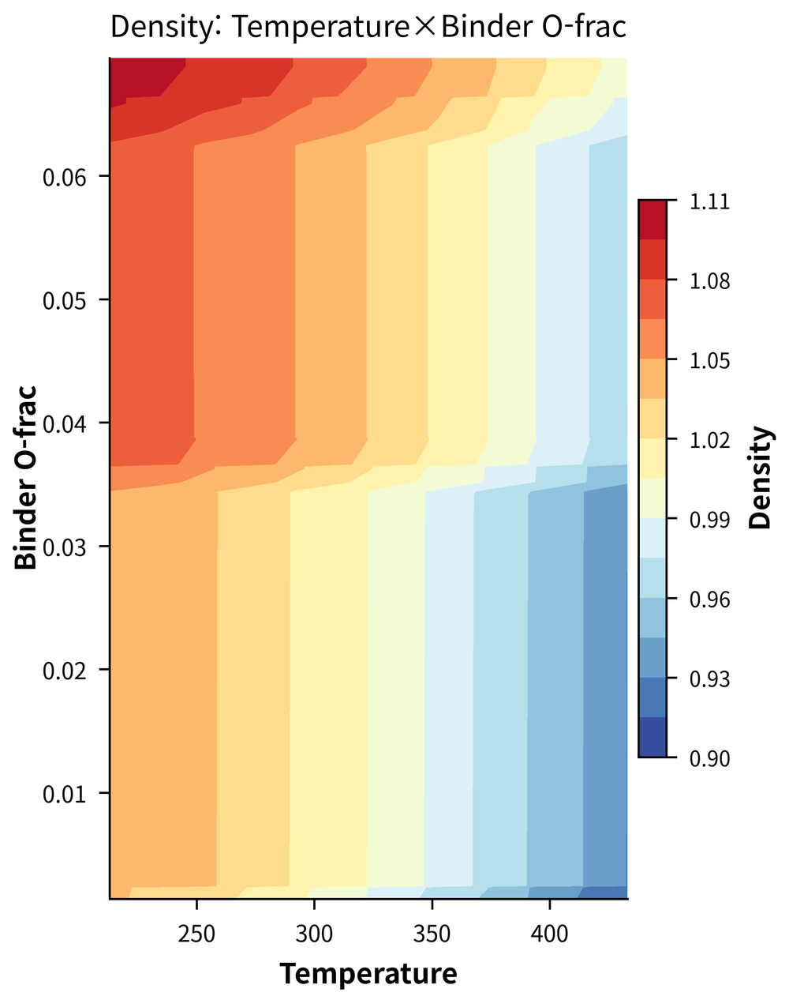
밀도: 온도 × O 분율
등고선 = 거의 세로 띠 → 온도 효과 지배 · O 분율 0.035 부근 계단은 모든 온도에서 같은 방향 → 가산 관계 · 상호작용 약함 (그림 판독)
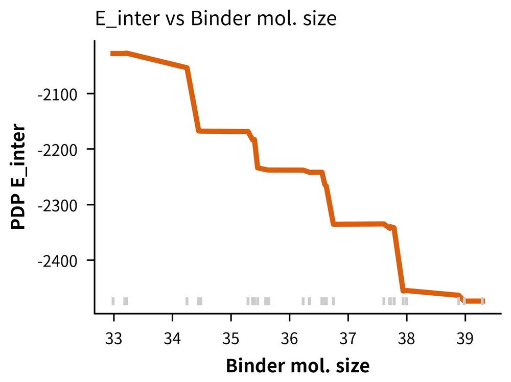
E_inter: 분자 크기
계단형 감소 · 산점도 회귀 기울기 −85 kcal/mol per atom (MD 계산값) → 큰 분자 = 강한 상호작용
9-3 · REFINEMENT
물리 타당성 점검 → 특징 재정련 5단계
어긋날 때
물리와 반대 방향 → 데이터 오염(예: CED 음수값) · 누수 먼저 점검
01
기여도 ≈ 0 변수 확인SARA 4종 → 제거
02
다른 특징으로 예측되는 변수 확인additive_wt (R² 0.9996) → 제거
03
상관 매우 높은 쌍 확인r 0.96 · 0.98 → 1개만 유지
04
타깃 정의에 포함된 입력 확인CED ↔ e_intra → 해당 타깃에서 제외
05
라벨 · 원핫을 물리 수치로 대체노화 → 산화지수 · 첨가제 → 분자특성
출처: COMID comid_shap_pdp_quant.csv · comid_shap_pdp_analysis.md · comid_feature_correction.md · comid_feature_redundancy.md
PRACTICE
실습 · XGBoost 대리모델과 SHAP
PRACTICE
01RDKit으로 표현자 계산 · 조성 가중 평균 구성
02GroupKFold로 밀도 · CED · 점도 모델 학습
03선형 회귀 기준선과 성능 비교
04SHAP 요약 그림 작성 · 물리적 해석 한 문단 기재
DELIVERABLE
물성별 RMSE · MAE · R² 표 (폴드 평균 ± 편차)
SHAP 요약 그림과 해석 메모 · 재정련한 특징 목록
이 성능 = 10주차 GNN의 기준선 · 데이터: comid_core672_dataset.csv (672행) · 주의: 점도 58행 = AAA1 무첨가 NA · SA · LA 3개 그룹뿐 → 5-fold GroupKFold 불가 · 그룹 1개씩 3-fold로 축소 · 폴드 간 편차 큼
퀴즈 9주차
SUMMARY
9주차 정리
01
표현자: 분자 수준 계산 → feature library 관리 → 조성 가중 평균으로 혼합물 표현
02
작은 표 형태 데이터에서 트리 모델 우세 · GNN의 기준선 역할
03
그룹 분할 = 미지 조성 성능의 정직한 추정 · 무작위 분할은 중복 행 누수로 과대평가 가능
04
SHAP · PDP = 예측 설명 + 특징 재정련의 첫 단계 — 물리 타당성 점검 · 인과로 해석 금지
퀴즈 9주차
다음 주차 — 기계학습 (2): 그래프 신경망과 능동학습
APPX
부록 · 참고 자료
사례 · Graphormer3D 수퍼그래프 5장 (10주차 그래프 신경망 연계)
APPENDIX · SUPERGRAPH 1/5
Graphormer3D + supergraph · 밀도 · CED 예측
수퍼그래프(supergraph) — 분자 1개 = 노드 1개
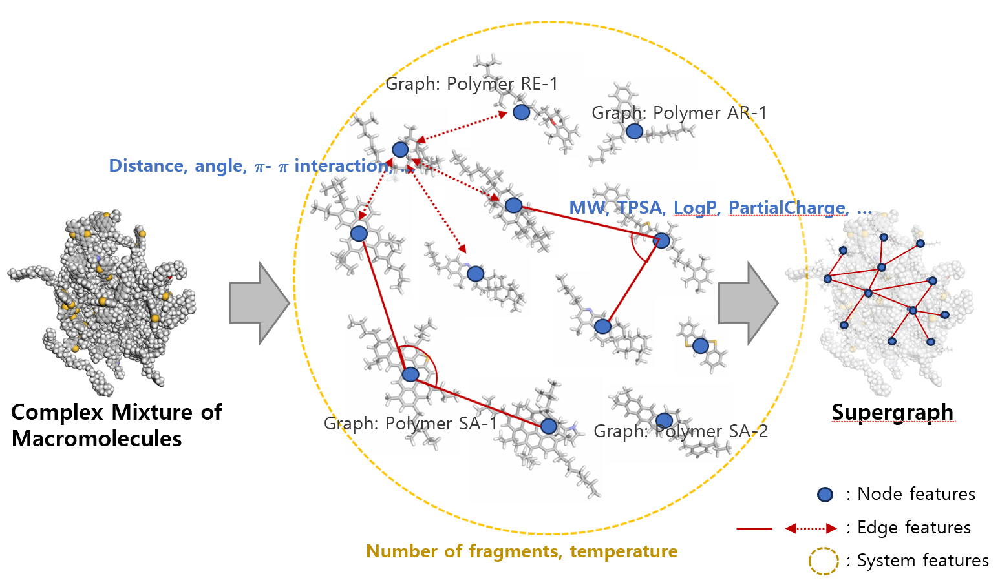
원자 그래프의 한계
바인더 = 분자량 400 이상 거대분자 60종 이상의 혼합물 — 원자 전체를 노드로 두면 비결합 상호작용까지 명시 → 계산량 급증
수퍼그래프 표현
거대분자 하나 = 부분그래프(subgraph) = 노드 하나 · 분자 사이 비결합 상호작용 = 엣지 · 셀 전체 = 수퍼그래프
장점
3차원 배치 정보 유지 · 원자 단위 상호작용 전체를 모델링하지 않아 비용 대폭 감소 · 첨가제–바인더 상호작용 표현 유지
중요도가 커지는 부분
노드 · 엣지에 담을 정보 — 표현자 선택 = 모델 성능 결정 요인
APPENDIX · MULTI-LEVEL FEATURES 2/5
다계층 특징 — 노드 · 엣지 · 시스템
노드 10개 · 분자 자체의 성질 (RDKit)
MolWt · TPSA · MolLogP · 수소결합 주고받음 · 부분전하 · 헤테로원자 수 · 회전가능 결합 수 · FractionCSP3 · 지방족 고리 수 · 방향족 고리 수
엣지 6개 · 분자쌍 사이 (15 Å 컷오프)
분자간 거리 · 평균 각도 · 수소결합 잠재력 · π–π 상호작용 잠재력 · LogP 차이 · 지문(fingerprint) Tanimoto 유사도
시스템 2개 · 셀 전체 조건
NumFragments(분자 수) · 온도 — 뒤의 ablation에서 영향 최대로 확인
설계 관점의 의미
유연성(회전 결합) · 극성(TPSA · LogP) · 상호작용 유형(수소결합 · π–π) = 첨가제의 패킹 · 혼화성 · 부착과 직접 연관
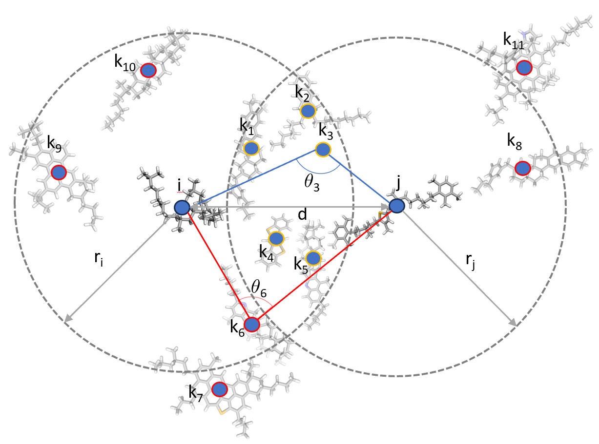
평균 각도: 노드 i · j의 반경이 겹치는 영역의 제3 노드(파란 테두리)로만 계산 — 겹침 밖 노드(빨간 테두리) 제외 → 국소 배치만 반영
APPENDIX · DATASET 3/5
5,346 케이스 — MD 분산을 학습 데이터에 포함
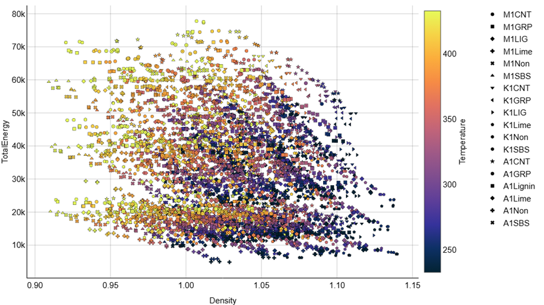
세로축 TotalEnergy · 가로축 밀도 · 범례의 Lime = 원 그림 표기 그대로 · 논문 본문 · 표의 첨가제는 SiO₂ (범례 표기 불일치)
설계 요점
셀 크기 · 초기 배치를 축으로 넣어 MD 분산 자체를 학습 데이터에 포함 · 그래핀 첨가 891건은 일반화 시험용 hold-out 으로 완전히 분리
APPENDIX · PERFORMANCE 4/5
예측 결과 — 모델 간 차이는 hold-out에서 발생
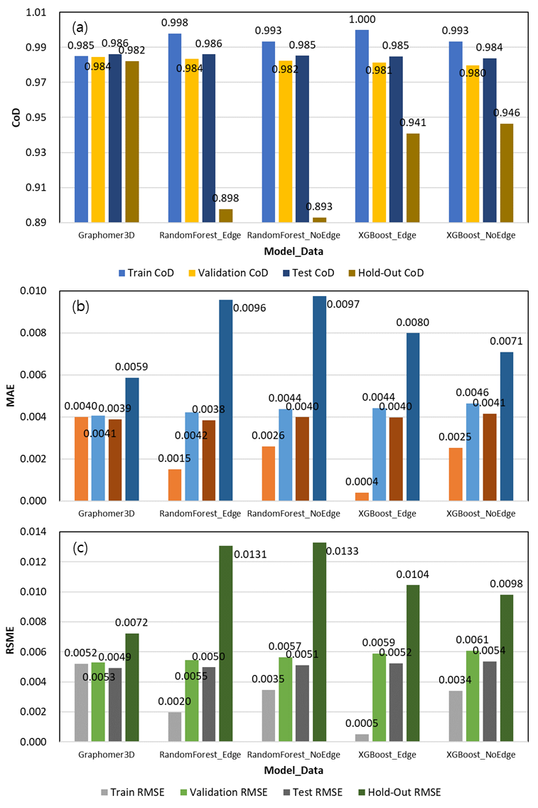
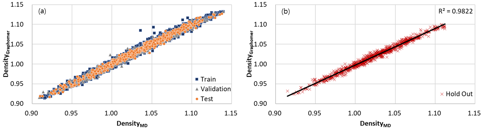
밀도 · hold-out R²
SG-Graphormer3D 0.982
XGBoost(엣지) 0.941 · RF(엣지) 0.898
XGBoost(엣지) 0.941 · RF(엣지) 0.898
학습 성능은 표 모델 우세
Train R²은 RF · XGB가 0.998~1.000 — 처음 보는 첨가제(그래핀)에서 성능 급락 = 차이의 원인
총에너지(TotalEnergy)는 양상 상이
조성이 거의 결정 → XGBoost hold-out R² 0.993 — 합 · 평균 같은 통계 기술자만으로 충분 · 그림 축 = TotalEnergy(계 총에너지) · CED(응집에너지밀도)와 다른 양 · 논문 절 제목의 'CED'는 본문 · 그림상 총에너지
읽는 법
밀도는 3차원 패킹이 지배 → 위치 정보를 담는 그래프가 필요 · 에너지는 조성이 지배 → 빠른 표 모델로 충분
APPENDIX · ABLATION STUDY 5/5
제거 실험(ablation) — 특징 1개씩 제거 후 기여도 판독
방법
기준선(모든 특징 포함)과 같은 학습 · 검증 · 시험 절차 유지 · 특징 하나만 제거 후 재학습 · 성능 하락 시에만 중요도 근거로 판독 · 제거 후 향상된 결과는 상호보완 효과 가능성 → 과해석 금지

시스템 특징이 지배
NumFragments 제거 0.837 · 온도 제거 0.898 (기준선 0.986) — 온도: 부피 팽창 · 분자 수: 질량 · 부피 모두에 영향(투입량 반영)
노드 특징의 기여
FractionCSP3 0.970 · 지방족 고리 수 0.977 · 헤테로원자 수 0.978 — 유연성 · 입체 부피 · 극성 → 패킹 효율
엣지 특징 · 각도
각도 제거 0.982 — 작지만 유의미 · 국소 기하 배치의 밀도 관여 근거